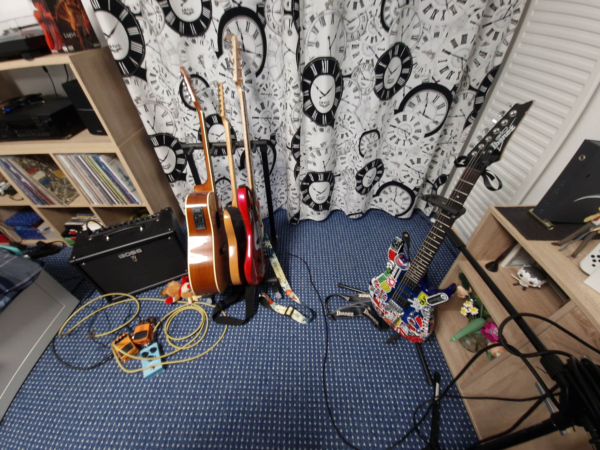
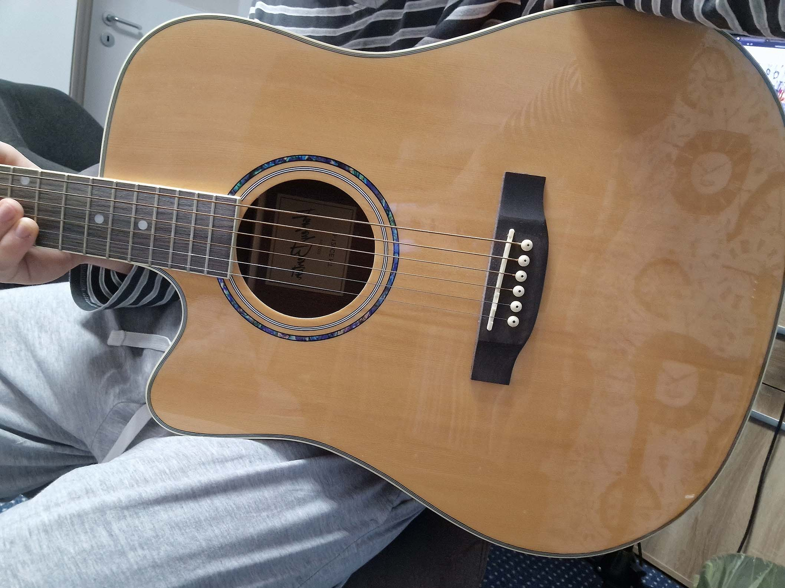
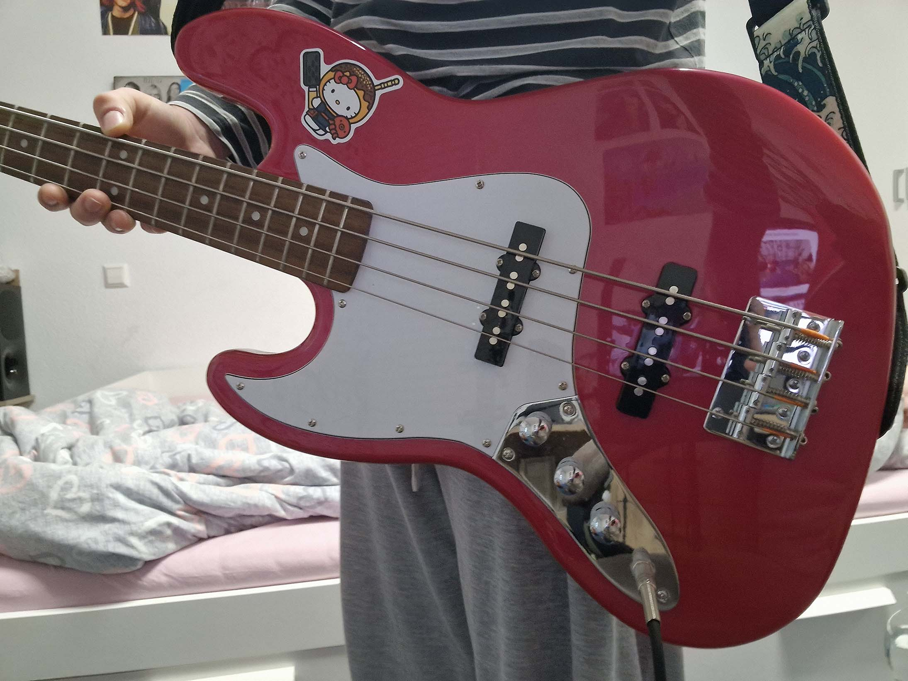
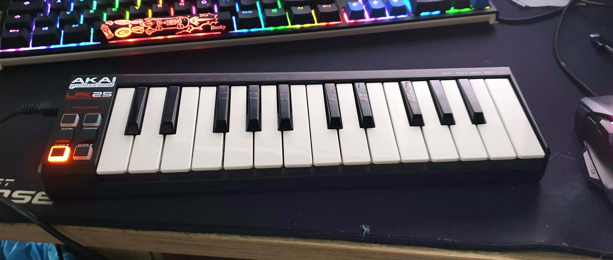
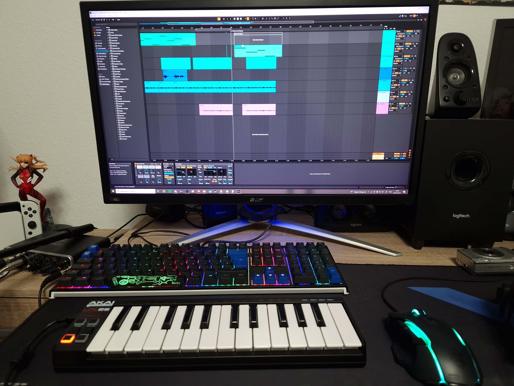
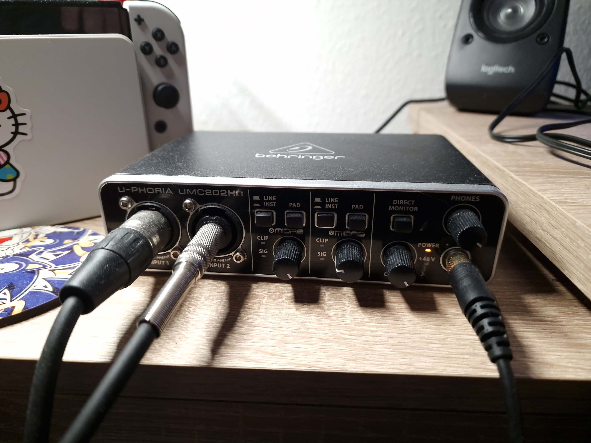

Außern meine Ibanez E-Gitarre, besitze ich noch andere Instrumenten.

Dies ist nach meiner ersten Gitarre das älteste Instrument in meiner Sammlung.
Eine akustische Gitarre von Harley Benton. Die spiele ich leider nicht mehr so oft.

Das ist meine Bassgitarre, ich habe sie nach der akustischen gekauft.
Darauf hat meine Freundin Lenya einen Hello Kitty Sticker geklebt.

Das hier ist mein neuster Einkauf, ein Telecaster Gitarre.
Die wollte ich wegen der Klang, und weil viele Bands, die ich jetz höre, so eine Gitarre haben.

Und mein letztes Instrument, eine Midi-Tastatur.
Damit kann man, je nach verwendetem programm, unterschiedliche klänge von instrumenten spielen.

Als Aufnahmeprogramm benutze ich Ableton Live.
Es ist nur die Intro-Version, aber wenn ich jemals Geld mit Musik verdiene, werde ich auf jeden Fall auf eine höhere Stufe upgraden.
Ich persönlich mag die wirklich intuitive Benutzeroberfläche, während sie gleichzeitig sehr leistungsstark und leistungsfähig ist.

Das funktioniert hier alles durch diesen kleinen Box hier, ein Audiointerface.
Meins hier hat 2 Inputs und 1 Output. Der erste Input benutze ich für mein Mikrofon und der zweite für meine Gitarren.
Das Audiointerface wird durch einen USB mit meinem Computer verbindet.